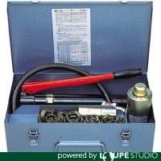
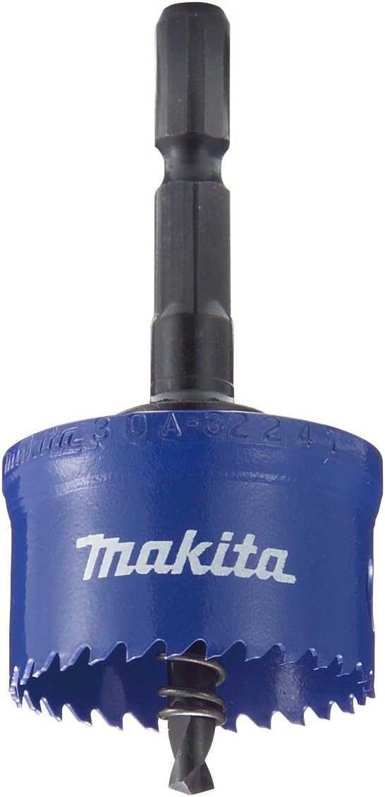

向いている人
- 盤・ボックスの穴加工が定期的にある人
- 穴の仕上がりを安定させたい人
- 狭所や壁際で作業することが多い人
手動油圧パンチャーは、盤やボックスの穴加工で仕上がりを安定させたい時に役立つ工具です。
ホールソーだけでも穴は開けられますが、バリ処理や仕上がり、作業姿勢まで含めると、パンチャーの方が工程を安定させやすい場面があります。
使用頻度、対象材の板厚、よく使う穴径。この3つがパンチャー本体と替刃構成に合うなら導入候補です。合わない場合は、ホールソーや別方式も比較した方が安全です。

先輩パンチャーは「どれが一番強いか」より、現場の穴径と板厚に合うかで見た方がいいよ。

新人使用頻度・板厚・穴径が合っていれば導入候補、ということですね。
先輩そう。あとは替刃のコストも見ること。本体だけで判断すると、後で高く感じることがあるからね。
パンチャーは便利ですが、出番が少ないと保有コストが先に立つこともあります。
盤・ボックスの穴加工が月に数回以上あるなら、導入効果を感じやすくなります。
対象材が本体仕様の範囲に収まるかを確認します。仕様外の厚板が多いなら別方式も比較します。
現場で多い穴径と替刃セットが合っているかを確認します。穴径が合わないと活かしにくいです。
ホールソーで下穴を作り、パンチャーで仕上げるように工程分担すると判断しやすいです。
小径穴が中心でパンチャーの出番が少ないなら、ホールソーや手持ち工具で足りる場合があります。導入前に使用頻度を確認してください。
パンチャーとホールソーは競合というより、主工程と補助工程で役割を分けると使いやすいです。
| 工具 | 向いている用途 | メリット | 注意点 |
|---|---|---|---|
| 泉 手動油圧式パンチャ SH101AP | 盤・ボックスの穴加工を日常的に行う | 分離式で狭所作業しやすい。仕上がりが安定しやすい。 | 小径穴中心だと効率が出にくい。本体＋替刃で初期費用は重め。 |
| マキタ 21mmホールソー A-32150 | 下穴作成の補助・段取り短縮 | インパクトで素早く使える。導入コストを抑えやすい。 | これ単体ではパンチャー作業を代替しきれない。 |
穴の仕上げを安定させたいならSH101AP、下穴工程を短縮したいなら21mmホールソー。迷う場合は、使用頻度 → 板厚 → 穴径の順で確認します。
現行記事の商品画像とAmazonリンクを維持して、主工程向けと下穴補助向けに整理しています。

電設・管工事の穴加工で使いやすい、分離式の手動油圧パンチャーです。
分離式なので、盤内や壁際のような体勢が作りにくい場所でも作業を進めやすいのが特徴です。
替刃はA19・A25・A31・A39・A51が付属で、軟鋼板は3.2mm、ステンレス板は1.5mm以下が目安です。
盤・ボックス穴加工を継続的に行う人、狭所で体勢が取りにくい作業が多い人、穴の仕上がりを安定させたい人に向いています。

最初の穴あけを少し楽にしたい時に見ておきたい補助用のホールソーです。
パンチャーの代替ではなく、下穴工程を手早く進めるための補助工具として考えると失敗しにくいです。
仕上がり品質までこの1本で完結させる用途ではなく、段取りを整えるサブ工程として使いやすい工具です。
下穴工程の時間を短くしたい人、パンチャーの補助工具を探している人、まず下穴だけでも時短したい人に向いています。
判断は、主工程をパンチャーに任せるか、下穴補助だけで足りるかで分けます。
盤・ボックス加工が月に数回以上あるなら、SH101APのようなパンチャーを主力候補にします。
パンチャー導入までは不要でも、下穴工程を短縮したいなら21mmホールソーを補助候補にします。
小径穴中心ならパンチャーの導入効果が出にくい場合があります。ホールソーや他方式も比較します。
仕様外の厚板加工が多いなら、無理にパンチャーで考えず、別の加工方法を検討します。
新人パンチャーは穴加工を安定させる主力、ホールソーは下穴の補助という見方ですね。
先輩うん。工具単体で比べるより、工程のどこを任せるかで考えると導入判断がしやすいよ。
A. 盤・ボックス穴加工が定期的に発生する人向けです。年に数回しか使わない場合は、レンタルや他方式比較の方が合理的なことがあります。
A. 下穴作成には有効ですが、仕上がりと作業再現性まで含めるとパンチャーに分があります。実務では「ホールソーで準備、パンチャーで仕上げ」の併用が判断しやすいです。
A. 使用頻度・板厚・穴径を先に決め、比較表で適合を確認するのが最短です。この順で見ると、スペックに引っ張られず実務基準で選びやすくなります。
A. 見るべきです。本体だけでなく、よく使う穴径の替刃更新コストまで含めて判断すると、導入後の失敗を減らせます。
※当サイトはAmazonアソシエイト・プログラムに参加しており、適格販売により収入を得ています。